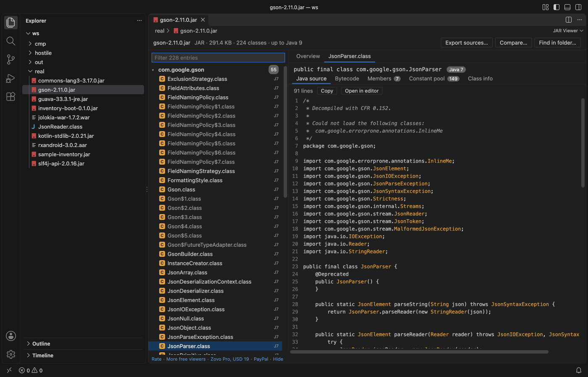

VS Code'da bir JAR açın ve decompile edilmiş Java kaynağını okuyun
Ücretsiz JAR Viewer & Java Decompiler eklentisini kurun ve bir .jar, .war, .ear, .aar ya da .class dosyasına tıklayın. Eklenti paketleri, kaynakları, MANIFEST.MF dosyasını ve her sınıfın Java sürümünü gösterir. Java gerektirmeyen javap -c -p tarzı bir bytecode listesi sunar ve Java kaynak kodunu, eklentiyle gelen CFR 0.152 ile bilgisayarınızdaki Java 8 veya üstü runtime üzerinden decompile eder. Tüm görünümler ve sınıfları tek tek decompile etmek ücretsizdir. Zovo Pro (tek seferlik 19 USD) üç araç ekler, bir JAR'ın decompile edilmiş kaynaklarını dışa aktarma, iki JAR'ı karşılaştırma ve bir klasördeki her JAR'da arama. Her birinin 3 ücretsiz deneme hakkı vardır.
Ücretsiz, MIT lisansı. Eklenti kimliği zovo.zovo-jar-viewer, sürüm 0.1.2.
Bu rehber başka dillerde de var: English · Čeština · हिन्दी · Bahasa Indonesia · 한국어 · Nederlands · Русский · Svenska · ไทย · Українська · Tiếng Việt · 繁體中文 · Deutsch · Español · 日本語

VS Code'da adımlar
- JAR Viewer eklentisini Marketplace'ten kurun ya da Ctrl+P (macOS'ta Cmd+P) tuşlayıp
ext install zovo.zovo-jar-viewerkomutunu çalıştırın. - Explorer'da bir
.jar,.war,.ear,.aarya da.classdosyasına tıklayın. Dosya JAR Viewer'da açılır. Overview, biçimi, kayıt, sınıf ve paket sayılarını, Main-Class ve Created by değerlerini, MANIFEST.MF dosyasını ve sınıfların hangi Java sürümleri için derlendiğini gösteren bir grafiği gösterir. - Paket ağacının üstündeki filtre kutusuna bir adın bir kısmını yazın. Kutu, siz yazarken sınıfları ve dosyaları bulur. İç sınıflar, dış sınıflarının altında soluk görünür.
- Bir sınıfa tıklayın. Java source sekmesi sınıfı iç sınıflarıyla birlikte CFR 0.152 ile decompile edilmiş olarak gösterir. Copy kaynağı panoya kopyalar, Open in editor ise onu normal bir düzenleyici sekmesinde açar.
- Java source sekmesi decompile edilmiş Java kaynağı için bir Java runtime gerektiğini söylüyorsa
jarViewer.javaPathayarına birjavadosyası ya da bir JDK klasörü girin veyaJAVA_HOMEtanımlayın. "JAR Viewer: Check the Java runtime used for decompiling" hangi Java'nın kullanıldığını gösterir. - Her opcode, exception tabloları ve satır numaralarıyla
javap -c -ptarzı bir liste için Bytecode sekmesini açın. Members, Constant pool ve Class info sekmeleri bildirimleri, constant pool kayıtlarını ve sınıf özniteliklerini gösterir. - Bir Spring Boot JAR'ında, WAR'da ya da AAR'da
BOOT-INF/libveyaWEB-INF/libiçindeki bir JAR'a ya da AAR'ınclasses.jardosyasına, ardından "Open nested archive" düğmesine tıklayın. Arşiv bir seviye derinde açılır ve üstte dış dosyanın adını taşıyan düğme sizi geri götürür.
Neler ücretsiz, Zovo Pro neler ekler
Paket ağacı, Overview, manifest, kaynaklar, decompile edilmiş Java kaynağı, bytecode, Members, Constant pool, Class info ve iç içe JAR'lar ücretsizdir, oturum açma gerekmez. CFR eklentiyle birlikte gelir ve bilgisayarınızda zaten bulunan Java ile çalışır. Eklenti arşivi hiçbir zaman değiştirmez ve ağ çağrısı yapmaz.
Export decompiled sources of a JAR, bir JAR, WAR, EAR ya da AAR içindeki her sınıfı CFR ile decompile eder ve .java dosyalarını bir klasöre yazar. Bu sırada ilerlemeyi gösterir ve bir Cancel düğmesi sunar. Java runtime yoksa bunun yerine bytecode listelerini yazar. Sınıfları tek tek açmak yerine tüm kütüphaneyi editörünüzde arayıp okuyabileceğiniz kaynak dosyalar olarak alırsınız.
Export decompiled sources of a JAR nasıl kullanılır (Zovo Pro)
- Arşivi açın ve görüntüleyicinin üstündeki "Export sources…" düğmesine ya da küçük Pro tools satırındaki "Export decompiled sources" düğmesine tıklayın. Explorer'da dosyaya sağ tıklayıp "Zovo Pro: Export decompiled sources" komutunu da seçebilirsiniz.
- Ya da Command Palette'ten "JAR Viewer: Export decompiled sources of a JAR (Pro)" komutunu çalıştırın. Açık bir arşiv yoksa komut bir JAR, WAR, EAR ya da AAR dosyası seçmenizi ister.
- Bir klasör seçin ve "Export here" düğmesine tıklayın. Kaynaklar, arşivin adını taşıyan ve sonu
-srcile biten yeni bir klasöre yazılır. - Bir bildirim ilerlemeyi gösterir. Cancel dışa aktarmayı durdurur ve deneme hakkı harcamaz. İşlem bitince görüntüleyici kaç dosya yazdığını ve nereye yazdığını söyler.
Export decompiled sources of a JAR, lisans istemeden önce bilgisayarınızda 3 kez ücretsiz çalışır. Açılır pencere ya da geri sayım yoktur.
Zovo Pro tek seferlik 19 USD'dir. Abonelik değildir ve lisans, Pro araçlarını yalnızca JAR Viewer eklentisinde değil, tüm Zovo eklentilerinde etkinleştirir. Kartla (Stripe) ödedikten sonra lisans anahtarınız bir sonraki sayfada görünür. VS Code'da Command Palette'ten "Zovo Pro: Enter Zovo Pro license key" komutunu çalıştırıp anahtarı yapıştırın. Anahtar ağ bağlantısı olmadan bilgisayarınızda doğrulanır. GitHub Sponsors ile ödüyorsanız "$19 one time" seviyesini seçin, ardından "Zovo Pro: I already paid: unlock with GitHub Sponsors" komutunu çalıştırın.
5 kişilik bir ekip tek seferlik 59 USD öder (kartla). Tüm kurallar ve tüm Pro araçları Zovo Pro sayfasında (İngilizce).
Cursor, Windsurf ya da VSCodium'da adımlar
- Ctrl+Shift+X (macOS'ta Cmd+Shift+X) ile Extensions görünümünü açın.
zovo.zovo-jar-viewerarayın ve Install'a tıklayın. Cursor, Windsurf ve VSCodium eklentileri Open VSX üzerinden kurar. Bu eklentinin oradaki adızovo/zovo-jar-viewer.- Editörünüzde eklenti galerisi yoksa .vsix dosyasını Open VSX sayfasından indirin ve "Extensions: Install from VSIX..." komutunu çalıştırın.
- Sonrası VS Code ile aynıdır.
JAR Viewer neler yapar
- JAR, WAR, EAR ve AAR arşivleri, ayrıca aynı klasördeki iç sınıflarıyla birlikte tek
.classdosyaları. - 200.000 kayda kadar arşivler ve 50.000 kayıt arasında siz yazarken sınıf ya da dosya bulan bir filtre.
- Sınıf verisindeki generic imzalar, record'lar, permitted subclass'lar, nest host'lar ve annotation'lar.
- Properties, XML, JSON, SQL ve services dosyaları gibi metin kaynakları metin olarak, ikili dosyalar ise hex önizlemesiyle gösterilir.
- Spring Boot
BOOT-INF/lib, WARWEB-INF/libve AARclasses.jararşivleri, bir seviye derinliğe kadar.
Neleri yapmaz
- Decompile edilmiş kaynak için bilgisayarınızda Java 8 veya üstü gerekir. Java olmadan da bytecode ve diğer tüm görünümler çalışır.
- CFR çıktısı orijinal kaynaktan farklı olabilir, örneğin local variable adlarında, bazı generics yapılarında ve lambda'larda.
- Kayıtlar tek tek 64 MB'a, class dosyaları 16 MB'a ve iç içe arşivler 128 MB'a kadar açılır. Uzak ya da sanal dosya sistemlerindeki dosyalar 256 MB'a kadar okunur.
- Eklenti salt okunurdur, bu yüzden bir sınıfı düzenleyemez ya da yeniden derleyemezsiniz. İç içe arşivler yalnızca bir seviye derinde açılır.
- APK ve DEX dosyaları okunmaz.
Sık sorulan sorular
Ücretsiz mi?
Evet. Tüm görünümler ve sınıfları tek tek decompile etmek ücretsizdir. Üç Pro aracı, Export decompiled sources of a JAR, Compare two JARs ve Find in every JAR of a folder, 3'er kez ücretsiz denenebilir ve bir deneme yalnızca araç size bir sonuç verdiğinde sayılır. Sonrasında Zovo Pro gerekir, tüm Zovo eklentileri için tek seferlik 19 USD.
Java source sekmesi neden Java istiyor?
CFR bir Java programıdır. Görüntüleyici Java'yı önce jarViewer.javaPath ayarında, sonra JAVA_HOME içinde, en son da PATH üzerindeki java komutunda arar. Java 8 veya üstü her runtime çalışır.
Bytecode'u Java olmadan okuyabilir miyim?
Evet. Bytecode, Members, Constant pool ve Class info sekmeleri JavaScript ile okunur ve Java gerektirmez.
Cursor'da çalışır mı?
Evet. Eklenti Open VSX'te zovo/zovo-jar-viewer olarak yer alır, bu yüzden Cursor, Windsurf ve VSCodium onu kurabilir.
Daha fazla bilgi
İngilizce rehberde daha fazla ayrıntı ve başka seçenekler var. Her özellik ve ayar JAR Viewer sayfasında (İngilizce).
Bilgiler 13 Kasım 2026'da Marketplace'teki güncel sürümle kontrol edildi.